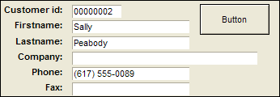
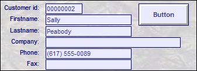

Overview of Stylesheets
Stylesheets provide enhanced customization options when designing layouts. A Style represents a named collection of object properties used in a layout. Any object (i.e. a button, field, embedded Browse) in a layout can have a style associated with it. For example, if you customized a button to make it green with a drop shadow, you could create a style based on that button which, when applied to other objects, would set the same properties for the other object.
Results of applying one button's style to another
You could reach the same results by selecting an object and formatting it step-by-step, but using styles greatly enhances speed and accuracy.
A style created on a layout is referred to as an Inline Style. An Inline Style is locally available on a layout and can be assigned to any object of the same type. This means styles associated with a button are not available to objects like fields, text objects, etc.
A great feature of Inline Styles is that by assigning the same style to a group of objects, like several buttons, you are creating a relationship between them. Therefore, you can edit the style of one of the objects (like change the font to Arial) and by using Update Style you'll update all the other objects using that style.
Stylesheets are a collection of styles for objects on a layout. as an Inline Style relates to an object, a Stylesheet relates to an entire layout.
Stylesheets are not attached to a layout (as opposed to Inline Styles) and are portable; they are saved individually and can be applied globally to other Alpha Anywhere layouts. So, after painstakingly creating an entire layout design, you can create a stylesheet from the design to apply to other layouts. If you want one layout to look like another, you do not have to format the same layout over and over.
Alpha Anywhere comes with over 25 pre-defined stylesheets, ready to be applied or edited to match your style. Maintain a consistent look and feel across different layouts by specifying object properties only once.


Results of applying a stylesheet to a Form
See Also